FROM THE LITERATURE
Everyday details become shopping pressure.
Walking distance, unclear information, slow decisions, hard-to-reach shelves, and the need to ask for help can turn a simple supermarket trip into a repeated source of pressure.
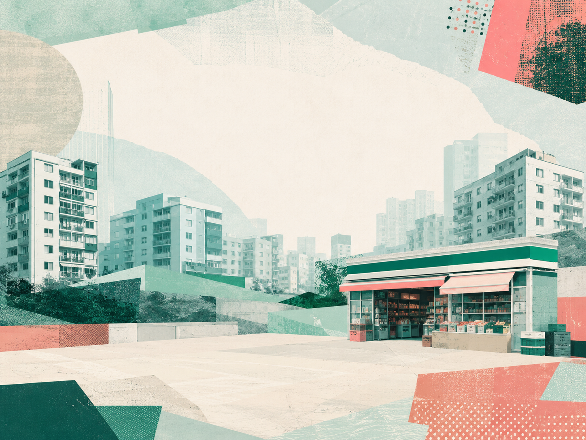
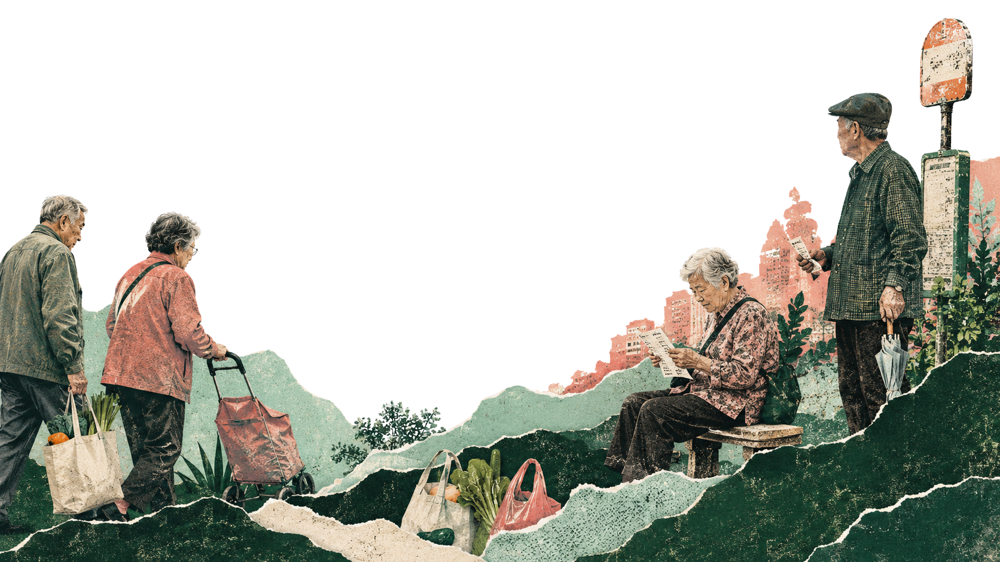
Chapter 01
Social Background / Community System
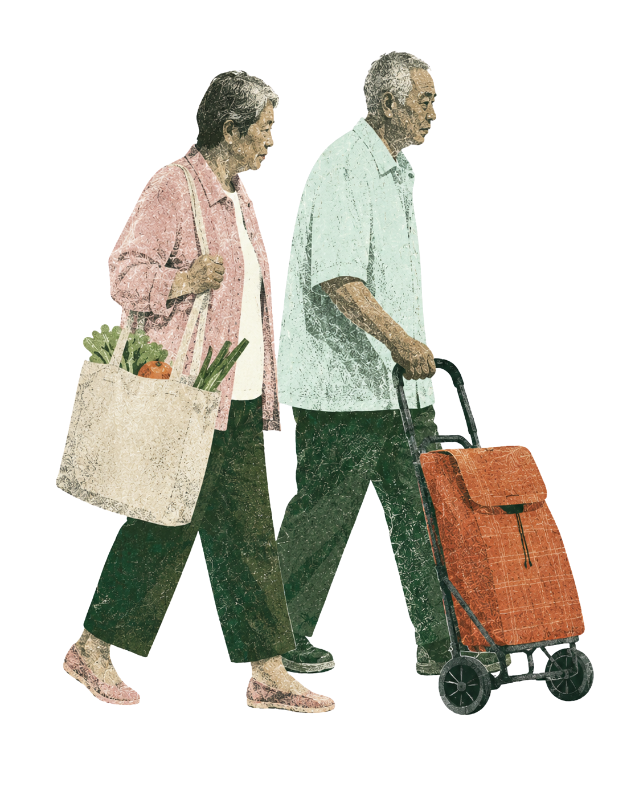
Daily Route
The route begins before entering the store.
Everyday shopping is shaped by distance, pace, waiting, and the small decisions that happen before the supermarket door.
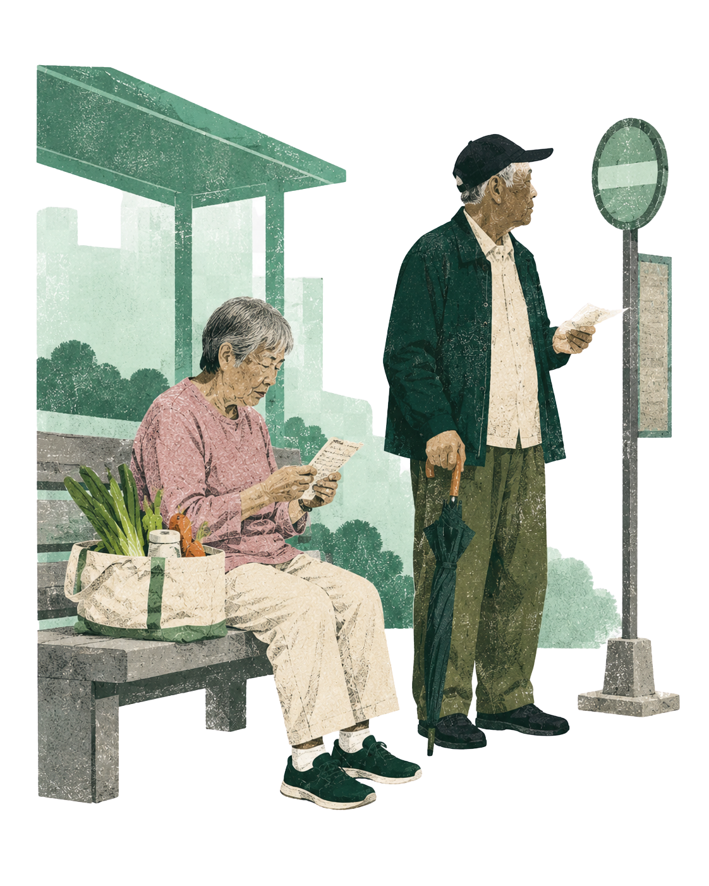
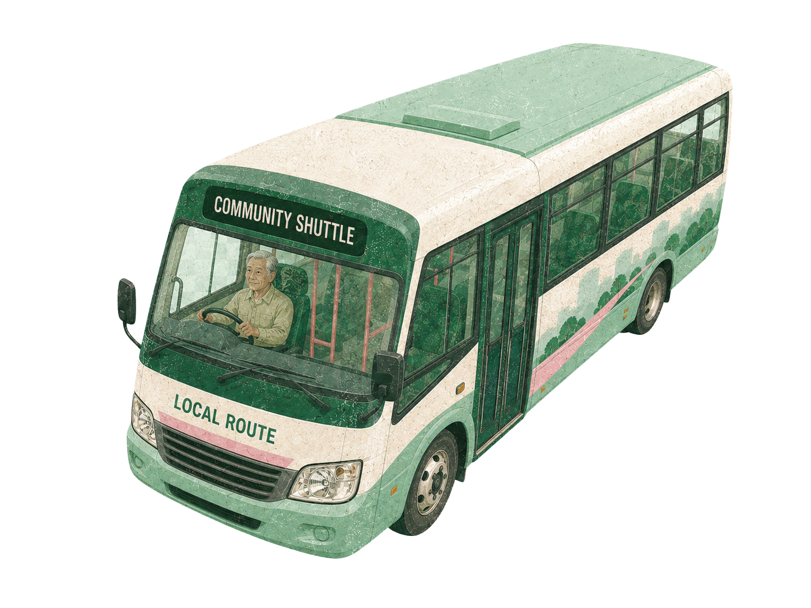
Community access turns a supermarket trip into a service journey.
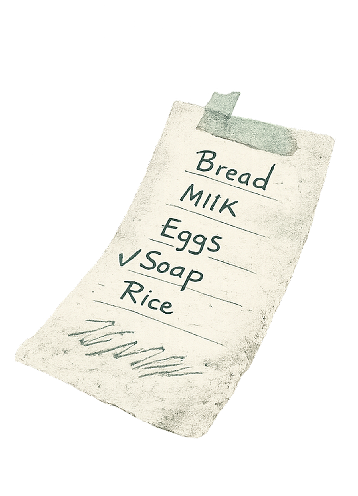
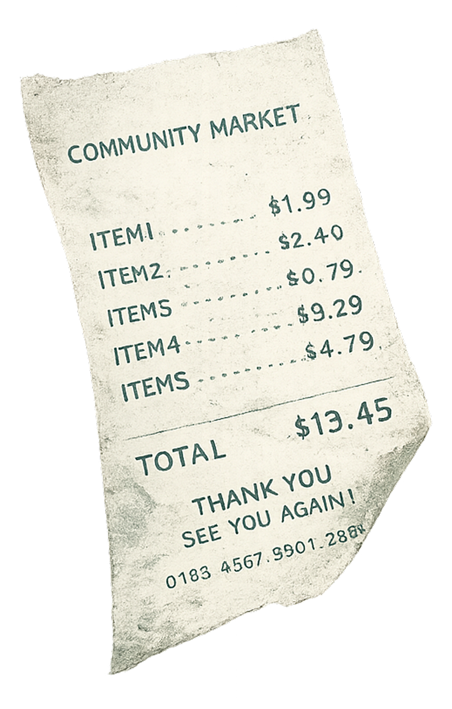
WHY THIS MATTERS
For older residents, shopping pressure often appears through small repeated frictions rather than dramatic barriers.
FROM THE LITERATURE
Walking distance, unclear information, slow decisions, hard-to-reach shelves, and the need to ask for help can turn a simple supermarket trip into a repeated source of pressure.
FROM THE LITERATURE
Ageing, access, clarity, community support, and service journey frame the design problem.
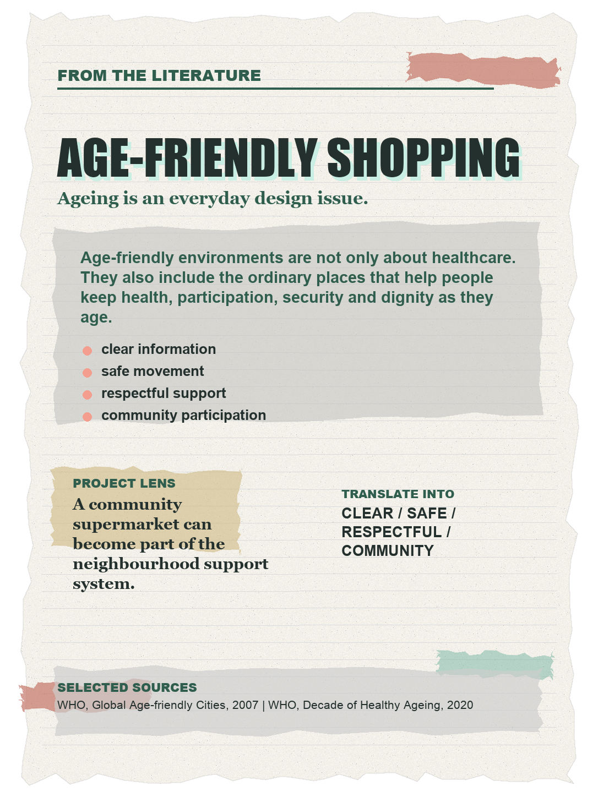
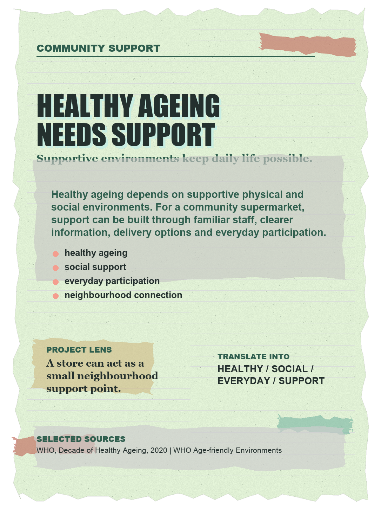
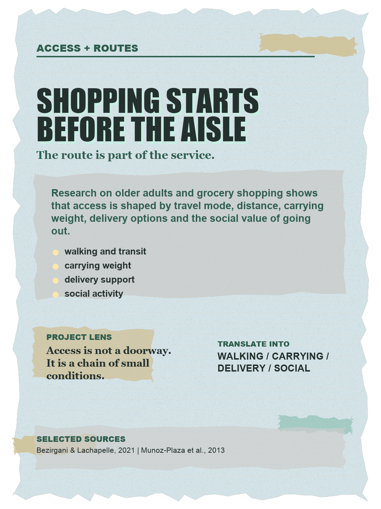
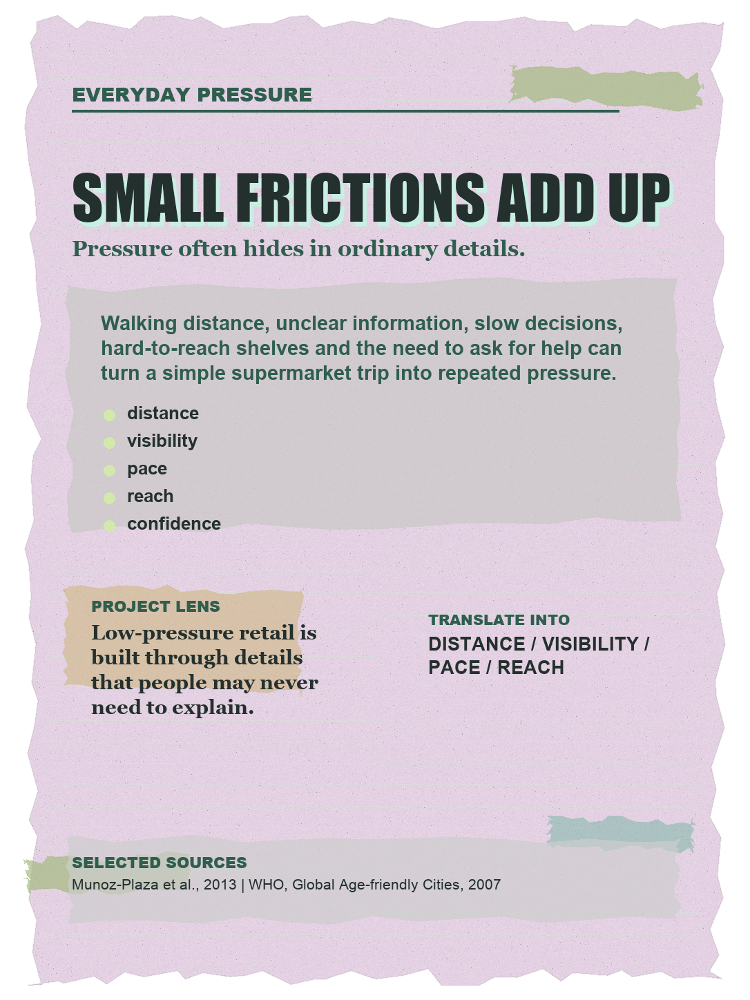
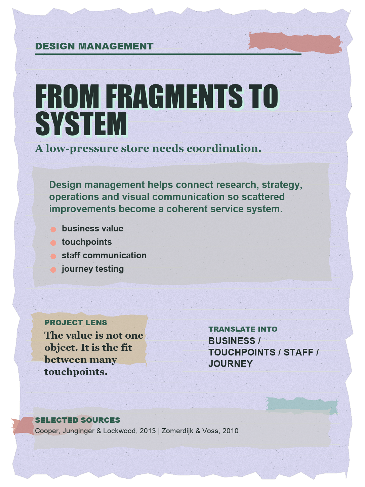